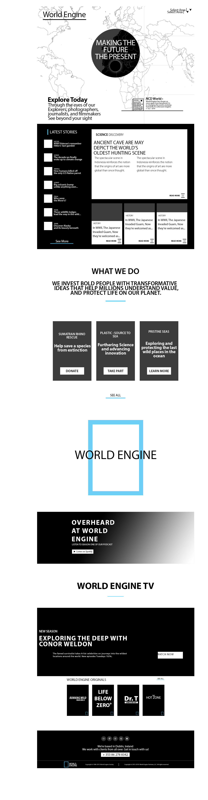

Hi
I am
Conor
Website
World Engine
This was the first website I ever created, we were limited to not using images, and also told to use very minimal colours, this forced us to keep things simple and clean, allowing our skills to develop in design, instead of clustering the website with clashes of vibrant colours. I focused on a News Website for my project using a 12 collumn grid system.

Website
Soul
This was the second website I've done, I was given more freedom for this site, the topic was Festivals / Concerts. I made a festival website called Soul, I used Ubers Design System as my base and built off of that. I wanted to give a clean fresh look that was welcoming to all users. It has a Form with Form Validation, Also one can log in and out or register for an account which updates to the database instantly.

Game
Detective Shurmen
Detective Shurmen was a short mock game I worked on, It was a puzzle based Game that the player would need to solve to collect pieces of a bigger puzzle being the story. It was the first time here that i tried a lot of things, being Phaser, Custome Animations, Voice overs and using full screen.